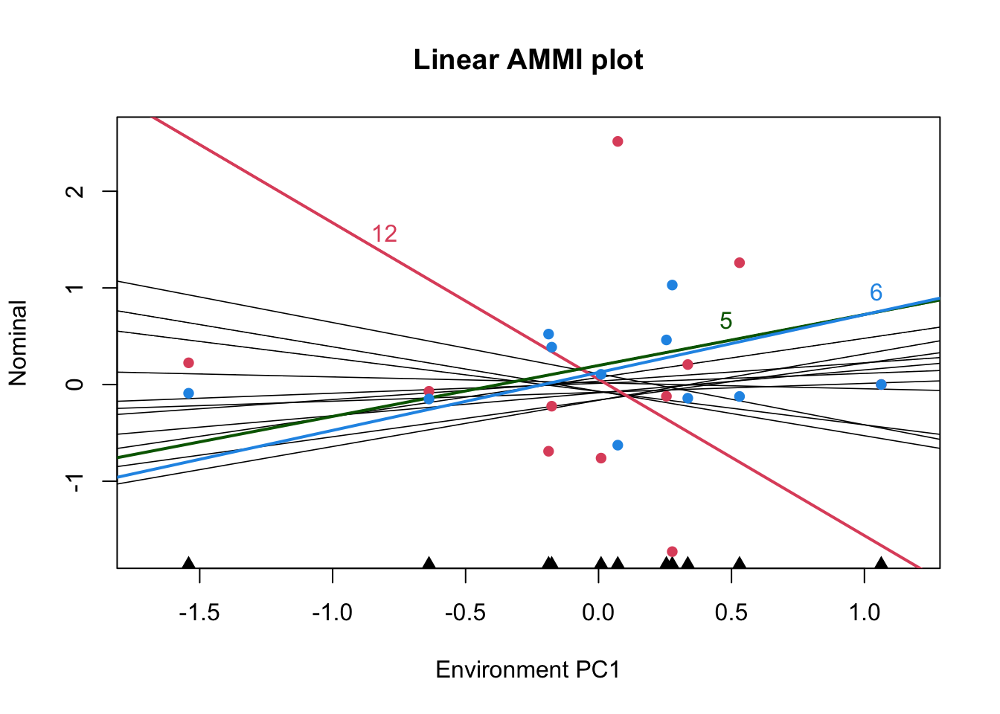

Last updated: 2021-03-25
Checks: 7 0
Knit directory: AnaliseR/
This reproducible R Markdown analysis was created with workflowr (version 1.6.2). The Checks tab describes the reproducibility checks that were applied when the results were created. The Past versions tab lists the development history.
Great! Since the R Markdown file has been committed to the Git repository, you know the exact version of the code that produced these results.
Great job! The global environment was empty. Objects defined in the global environment can affect the analysis in your R Markdown file in unknown ways. For reproduciblity it’s best to always run the code in an empty environment.
The command set.seed(20210324) was run prior to running the code in the R Markdown file. Setting a seed ensures that any results that rely on randomness, e.g. subsampling or permutations, are reproducible.
Great job! Recording the operating system, R version, and package versions is critical for reproducibility.
Nice! There were no cached chunks for this analysis, so you can be confident that you successfully produced the results during this run.
Great job! Using relative paths to the files within your workflowr project makes it easier to run your code on other machines.
Great! You are using Git for version control. Tracking code development and connecting the code version to the results is critical for reproducibility.
The results in this page were generated with repository version df218f9. See the Past versions tab to see a history of the changes made to the R Markdown and HTML files.
Note that you need to be careful to ensure that all relevant files for the analysis have been committed to Git prior to generating the results (you can use wflow_publish or wflow_git_commit). workflowr only checks the R Markdown file, but you know if there are other scripts or data files that it depends on. Below is the status of the Git repository when the results were generated:
Ignored files:
Ignored: .Rhistory
Ignored: .Rproj.user/
Note that any generated files, e.g. HTML, png, CSS, etc., are not included in this status report because it is ok for generated content to have uncommitted changes.
These are the previous versions of the repository in which changes were made to the R Markdown (analysis/analiseConjuntaVA.Rmd) and HTML (docs/analiseConjuntaVA.html) files. If you’ve configured a remote Git repository (see ?wflow_git_remote), click on the hyperlinks in the table below to view the files as they were in that past version.
| File | Version | Author | Date | Message |
|---|---|---|---|---|
| Rmd | df218f9 | chris263 | 2021-03-25 | Joint Analysis |
Install packages, start the README.md, set the random seed
va <- read.csv("data/A427_converted.csv", sep = ",", header = T)
colnames(va) <- c("germplasmName", "Replication", "Location", "kgHa", "DollarKg",
"DollarHa", "IQS", "Talo", "TotalSugar", "TotalAlcaloids")
Traits <- colnames(va)[4:length(va)]
nTraits <- ncol(va) - 3
Treatments <- unique(va$germplasmName)
Locations <- unique(va$Location)
#This is the economic value for each trait
ecoValue <- c(1.1, 1.1, 1.6, 1.1, -1.05, 1.1, -1.05)
pre_result <- matrix(data = NA, nrow = nTraits, ncol = 3)
colnames(pre_result) <- c("h2", "varG", "varP")
rownames(pre_result) <- Traits
library("lme4")
library("emmeans")
#Centering the data - Function scale sets mean = 0
#It is important to scale the data in order to get a sum of different traits afterwards
va_centered <- va
for (i in 1:nTraits) {
va_centered[, 3 + i] <- scale(va[, i + 3], scale = TRUE)
}
for (i in 4:length(va_centered)) {
Pheno <- colnames(va_centered)[i]
model <- lmer(get(Pheno) ~ (1 | germplasmName) + (1 | Replication) + (1 | Location) +
(1 | germplasmName:Location), na.action = na.exclude, data = va_centered)
variance = as.data.frame(VarCorr(model))
gvar <- variance[2, "vcov"]
envar <- variance[3, "vcov"]
resvar <- variance[5, "vcov"]
addCor <- variance[2, "sdcor"]
phenovar <- gvar + envar + resvar
H2 = gvar/phenovar
pre_result[i - 3, 1] <- H2
pre_result[i - 3, 2] <- gvar
pre_result[i - 3, 3] <- phenovar
}
preresults_table <- knitr::kable(pre_result)
preresults_table| h2 | varG | varP | |
|---|---|---|---|
| kgHa | 0.0708469 | 0.0707958 | 0.9992790 |
| DollarKg | 0.2382930 | 0.2211305 | 0.9279773 |
| DollarHa | 0.2029126 | 0.2007283 | 0.9892356 |
| IQS | 0.2278214 | 0.2109315 | 0.9258634 |
| Talo | 0.2885476 | 0.2889656 | 1.0014486 |
| TotalSugar | 0.0741628 | 0.0771881 | 1.0407916 |
| TotalAlcaloids | 0.3125941 | 0.3228502 | 1.0328094 |
Preparing for Pheno and Geno matrix Calculating regression coefficients
##regression coefficient - if necessary
# rP <- c()
# count=1
# for(i in 1:nTraits){
# t1 <- as.numeric(va[,i+3])
# var1 <- pre_result[i,3]
# if(i < nTraits){
# for (j in (i+1):nTraits){
# t2 <- as.numeric(va[,j+3])
# var2 <- pre_result[j,3]
# cal_rP <- var(t1,t2, na.rm = TRUE)/sqrt(var1*var2)
# rP[count] <- cal_rP
# count=count+1
# }
# }
# }
# 1 Phenotypic matrix
#The of diagonal is defined by the covariation between the traits.
# cov(1,2) = rP x sqrt(varPheno[1] x varPheno[2])
PhenoMatrix <- matrix(data = NA, ncol = nTraits, nrow = nTraits)
for (i in 1:nTraits) {
t1 <- as.numeric(va_centered[, i + 3])
if (i < nTraits) {
for (j in (i + 1):nTraits) {
t2 <- as.numeric(va_centered[, j + 3])
offDiagonal <- var(t1, t2, na.rm = TRUE)
PhenoMatrix[i, j] <- offDiagonal
PhenoMatrix[j, i] <- offDiagonal
}
}
PhenoMatrix[i, i] <- pre_result[i, 3]
}
InvPhenoMatrix <- solve(PhenoMatrix) #solve is a command to calculate the inverted matrix
# 2 Genotypic matrix
GenoMatrix <- matrix(pre_result[, 2])
# 3 Economic value
# Already defined as ecoValue
# Calculate the Index
SelectionIndex <- InvPhenoMatrix %*% GenoMatrix
# Multiplying the economic value
for (i in 1:nTraits) {
SelectionIndex[i, 1] <- SelectionIndex[i, 1] * ecoValue[i]
}
rownames(SelectionIndex) <- Traits
colnames(SelectionIndex) <- "Index"
#Calculate the index per germplasmName
preresults <- matrix(data = NA, nrow = length(Treatments), ncol = length(Traits))
colnames(preresults) <- Traits
rownames(preresults) <- Treatments
for (i in 1:length(Treatments)) {
my.data.frame <- subset(va_centered, germplasmName == Treatments[i])
for (j in 1:nTraits) {
preresults[i, j] <- mean(my.data.frame[, j + 3], na.rm = TRUE)
}
}
index_matrix <- preresults %*% SelectionIndex
# print(index_matrix)
results <- as.data.frame(cbind(preresults, index_matrix))
# print(SelectionIndex)
results <- results[order(results$Index, decreasing = TRUE), ]
results_table <- knitr::kable(results)
#Calculate the index per germplasmName and Location
Locresults <- matrix(data = 0, nrow = length(Treatments), ncol = length(Locations))
colnames(Locresults) <- Locations
rownames(Locresults) <- Treatments
for (i in 1:length(Treatments)) {
for (j in 1:length(Locations)) {
loc.data.frame <- subset(va_centered, germplasmName == Treatments[i] & Location ==
Locations[j])
for (k in 1:length(Traits)) {
value <- mean(loc.data.frame[, k + 3], na.rm = TRUE) * SelectionIndex[k,
1]
Locresults[i, j] <- Locresults[i, j] + value
}
}
}
results_table| kgHa | DollarKg | DollarHa | IQS | Talo | TotalSugar | TotalAlcaloids | Index | |
|---|---|---|---|---|---|---|---|---|
| 2 | -0.0413270 | -0.0569307 | -0.0923850 | -0.0410660 | -0.9880427 | -0.0260208 | -0.4979715 | 0.4443771 |
| 10 | -0.2350294 | -0.4952417 | -0.4752692 | -0.3209408 | -0.1215904 | -0.1614929 | -0.9352278 | 0.3488547 |
| 5 | 0.0624544 | 0.6452181 | 0.4512669 | 0.6620105 | -0.4540753 | 0.5072034 | -0.3731158 | 0.2650146 |
| 9 | -0.2201756 | 0.3112187 | 0.0080297 | 0.5522052 | -0.0846837 | 0.0398096 | -0.4816589 | 0.2566217 |
| 6 | 0.2383445 | 0.4937242 | 0.4848833 | 0.4331394 | -0.3195812 | 0.4426179 | -0.4546116 | 0.1811778 |
| 4 | 0.0883998 | 0.2681855 | 0.2393704 | 0.1439032 | -0.8920863 | 0.2913933 | 0.3540774 | 0.1712825 |
| 1 | 0.1516881 | -0.4109839 | -0.1737018 | -0.4487729 | 0.1025233 | -0.0780043 | -0.6212600 | 0.1135952 |
| 14 | -0.1097700 | -0.1309755 | -0.1814220 | -0.0675363 | -0.1968553 | 0.0117853 | 0.3107175 | 0.0769265 |
| 12 | -0.7980379 | -1.3225006 | -1.3051536 | -1.3126079 | 0.0509242 | -0.7033811 | -0.3391592 | 0.0682498 |
| 13 | -0.0161835 | 0.2052049 | 0.1120087 | 0.1716647 | 0.4825985 | 0.0094224 | 0.5928183 | -0.2956711 |
| 11 | 0.0595334 | -0.0305469 | 0.0261255 | -0.0994943 | 0.5644588 | -0.1394393 | 0.3697497 | -0.3189211 |
| 7 | 0.2369126 | 0.1643526 | 0.2723524 | 0.1748928 | 0.5341977 | -0.1449527 | 0.7171516 | -0.4059584 |
| 3 | 0.4260331 | 0.2018005 | 0.4293674 | 0.0754678 | 0.4696664 | 0.0732203 | 0.6988673 | -0.4101105 |
| 8 | 0.1504854 | 0.1669058 | 0.2047707 | 0.0938679 | 0.8474137 | -0.1197486 | 0.6304317 | -0.4835136 |
This is using Bilinear sowftware
library("Bilinear")
# # Prepare a matrix with mean of treatments per location
# stability <- matrix(data = NA, nrow = length(Treatments), ncol = length(Locations))
# colnames(stability) <- Locations
# rownames(stability) <- Treatments
# for(i in 1:length(Treatments)){
# for(j in 1:length(Locations)){
# my.stability <- subset(va_centered , germplasmName == Treatments[i] & Location == Locations[j] )
# stability[i,j] <- mean(my.stability[,4], na.rm=TRUE)
# }
# }
#
AMMIfit <- bilinear(x = Locresults, verbose = F)
AMMIplot(AMMIfit)
# AMMIplot(AMMIfit, PC=2)
# library('agricolae')
# model<- with(Locresults,AMMI(Location, germplasmName, Replication, get(Locations[1]), console=FALSE))
# model$ANOVA
# # see help(plot.AMMI)
# # biplot
# plot(model)
# AMMI.contour(model,distance=0.3,shape=8,col='red',lwd=2,lty=5)
# # triplot PC 1,2,3
# plot(model, type=2, number=TRUE)
# # biplot PC1 vs Yield
# plot(model, first=0,second=1, number=TRUE)
# # Example 2
Analysis of Variance Table
Response: y
Df SS MS testStat Pvalue
E 10 39.68863952 3.968863952 81.4762 4.945026e-51 ***
G 13 14.01077303 1.077751772 22.1250 6.436982e-27 ***
PC1 22 2.29064636 0.104120289 305.0000 3.050000e-02 *
PC2 20 1.44093913 0.072046957 1276.0000 1.276000e-01
PC3 18 0.92931744 0.051628747 3142.0000 3.142000e-01
PC4 16 0.64683184 0.040426990 3634.0000 3.634000e-01
PC5 14 0.41118976 0.029370697 5555.0000 5.555000e-01
PC6 12 0.28272427 0.023560356 5001.0000 5.001000e-01
PC7 10 0.17260485 0.017260485 5304.0000 5.304000e-01
PC8 8 0.11193755 0.013992193 2239.0000 2.239000e-01
PC9 6 0.03440197 0.005733662 5944.0000 5.944000e-01
PC10 4 0.01195921 0.002989803 NA
---
Signif. codes: 0 '***' 0.001 '**' 0.01 '*' 0.05
Number of significant multiplicative terms : 1 
Note that the echo = FALSE parameter was added to the code chunk to prevent printing of the R code that generated the plot.
sessionInfo()
R version 4.0.3 (2020-10-10)
Platform: x86_64-apple-darwin17.0 (64-bit)
Running under: macOS Big Sur 10.16
Matrix products: default
BLAS: /Library/Frameworks/R.framework/Versions/4.0/Resources/lib/libRblas.dylib
LAPACK: /Library/Frameworks/R.framework/Versions/4.0/Resources/lib/libRlapack.dylib
locale:
[1] en_US.UTF-8/en_US.UTF-8/en_US.UTF-8/C/en_US.UTF-8/en_US.UTF-8
attached base packages:
[1] stats graphics grDevices utils datasets methods base
other attached packages:
[1] Bilinear_0.2.2 emmeans_1.5.5-1 lme4_1.1-26 Matrix_1.3-2
[5] workflowr_1.6.2
loaded via a namespace (and not attached):
[1] Rcpp_1.0.6 highr_0.8 nloptr_1.2.2.2 pillar_1.4.7
[5] compiler_4.0.3 later_1.1.0.1 formatR_1.7 git2r_0.28.0
[9] tools_4.0.3 boot_1.3-25 statmod_1.4.35 digest_0.6.27
[13] nlme_3.1-151 evaluate_0.14 lifecycle_0.2.0 tibble_3.0.4
[17] lattice_0.20-41 pkgconfig_2.0.3 rlang_0.4.10 rstudioapi_0.13
[21] yaml_2.2.1 mvtnorm_1.1-1 xfun_0.20 coda_0.19-4
[25] stringr_1.4.0 knitr_1.30 fs_1.5.0 vctrs_0.3.6
[29] hms_0.5.3 rprojroot_2.0.2 grid_4.0.3 glue_1.4.2
[33] here_1.0.1 R6_2.5.0 rmarkdown_2.6 minqa_1.2.4
[37] readr_1.4.0 magrittr_2.0.1 whisker_0.4 MASS_7.3-53
[41] promises_1.1.1 ellipsis_0.3.1 htmltools_0.5.1 splines_4.0.3
[45] xtable_1.8-4 httpuv_1.5.4 estimability_1.3 stringi_1.5.3
[49] crayon_1.3.4